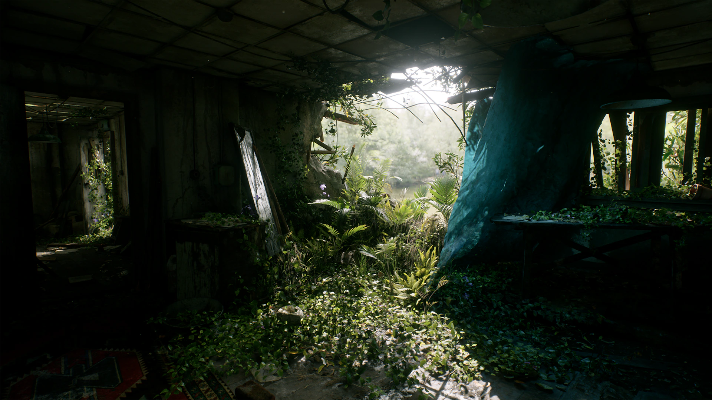

废弃的公寓场景
室内照明场景。室内是全局光照最难处理的情况，这使其成为评估全局光照的最有用场所。

废弃公寓内部几乎所有可见的表面都是通过反射光而非阳光直射照明的。正因如此，室内环境才是检验整体照明解决方案是否真正有效的试金石。下载
为什么选用室内场景
室内几乎完全依靠间接光照。阳光通过少量开口进入，而眼睛看到的其他一切都是反射光。全局光照（GI）设置错误的话，场景会显得平淡或有光泄露；没有直接光源可以掩盖。
这使得像这样的场景成为评估 Vite 全局光照选项实际差异的合适场所：
| 方法 | 在室内的行为 |
|---|---|
| 静态 DDGI | 烘焙探针数据。成本最低，如果没有物体移动，则是正确的。 |
| 动态 DDGI | Probes update at runtime. Handles time of day and moving occluders. |
| SSGI | 添加探针网格无法解析的接触尺度细节。 |
| 逐像素光线追踪全局光照 (GI) | 参考级质量，帧速率下成本过高，默认情况下会被编译禁用。 |
对于大多数室内场景来说，比较实际的解决方案是采用 DDGI 加 SSGI。DDGI 提供低频反射光，而 SSGI 则用于填充接触点附近和角落的细节。参见全局照明。
需要注意的事项
- 漏光。 当探针间距相对于壁厚过大时，基于探针的全局光照 (GI) 会透过薄壁几何体漏光。室内场景中有很多薄壁，因此需要在此处调整探针密度。
- 角落暗化。 比较单独使用动态 DDGI 和启用 SSGI 的 DDGI。差异主要集中在角落和接触点。
- 环境光遮蔽选择。 在杂乱的室内场景中，HBAO+ 与优化的 SSAO 路径之间的差异最为明显。
- 光线追踪反射。 室内表面会反射大量屏幕外的几何体，而这正是屏幕空间反射无法处理的情况。